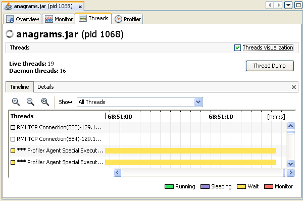
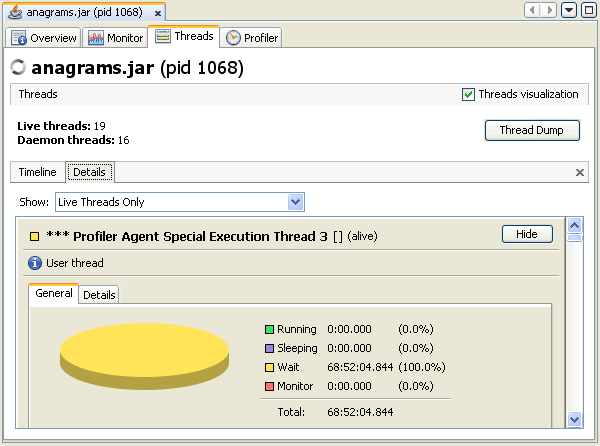
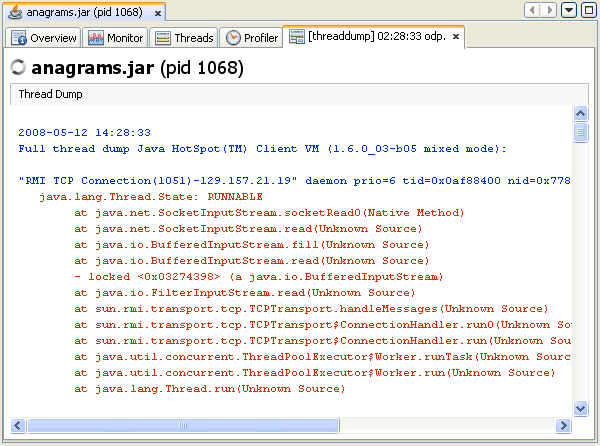

VisualVM (средство VisualVM) представляет данные локальных и удалённых приложений на вкладке, относящейся к этому приложению. Вкладки приложений отображаются в главном окне справа от окна Applications (приложения). Одновременно можно держать открытыми несколько вкладок приложений. На каждой вкладке приложения есть вложенные вкладки, которые показывают разные типы сведений о приложении.
VisualVM показывает в реальном времени сводные данные об активности потоков на вкладке Threads (потоки).
Примечание: сведения на вкладке Threads основаны на JMX (Java Management Extensions).
Вкладка Threads видна, если VisualVM может установить соединение на основе технологии JMX (соединение JMX) с целевым приложением и получить инструментарий JMX из программного обеспечения JVM (Java Virtual Machine, виртуальная машина Java).
Если целевое приложение — локальное и выполняется на JDK (Java Development Kit, комплект разработки Java) версии 1.6, соединение JMX устанавливается автоматически.
Если целевое приложение не выполняется на JDK версии 1.6, может потребоваться явно установить соединение JMX
с экземпляром программного обеспечения JVM. Подробнее об установлении соединения JMX см. в следующем документе:
По умолчанию вкладка Threads показывает шкалу времени текущей активности потоков. Щёлкните поток на шкале времени, чтобы увидеть подробности об этом потоке на вкладке Details (подробности).
Эта вкладка показывает шкалу времени с состояниями потоков в реальном времени. Кнопками на панели инструментов Timeline (шкала времени) можно приближать и отдалять текущий вид и переключаться в режим Scale to Fit (масштаб по размеру). В раскрывающемся списке можно выбрать, какие потоки отображать. Можно смотреть все потоки, живые потоки или завершённые потоки. Можно также выбрать один поток или несколько потоков, чтобы показать подмножество потоков. Дважды щёлкните шкалу времени потока, чтобы открыть этот поток на вкладке Details.
Шкала времени каждого потока даёт быстрый обзор активности потока.

Вкладка Details (подробности) показывает более подробные сведения об отдельных потоках. В раскрывающемся списке можно выбрать отображение всех потоков, всех живых потоков или всех завершённых потоков. Можно также показать только подробности потоков, выбранных в представлении Timeline. Для каждого потока отображаются имя, имя класса и текущее состояние (живой/завершённый). Также приводится краткое описание потока.
У каждого потока на вкладке Details есть следующие вкладки:
Шкала времени каждого потока даёт быстрый обзор активности потока.

С помощью VisualVM можно снять Thread Dump (снимок потоков, трассировку стека), пока выполняется локальное приложение. Снятие снимка потоков не останавливает приложение. При печати снимка потоков вы получаете распечатку стека потоков, включающую состояния потоков Java.
Когда вы печатаете снимок потоков в VisualVM, средство печатает трассировку стека активных потоков приложения. Снимать снимок потоков в VisualVM особенно удобно, когда у приложения нет консоли командной строки. Трассировку стека можно использовать для диагностики ряда проблем, например взаимных блокировок или зависания приложения.
Снимок экрана снимка потоков (трассировки стека) на вложенной вкладке снимка потоков.
